انتظر قليلاً من فضلك...
تسجيل الدخول
لوحة المطور

دليل شامل يجمع ورش وصناعية جازان وقريبا المملكة
🚗
السيارات
🔨
الحدادة والألمنيوم
🛋️
الكنب
❄️
المكيفات والغسالات
ورش السيارات
ورش الحدادة والألمنيوم
ورش الكنب
ورش المكيفات و الغسالات